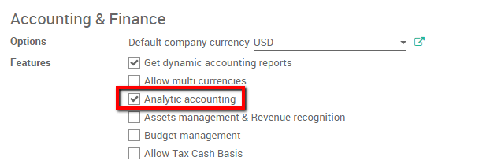
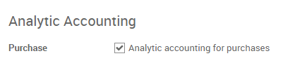
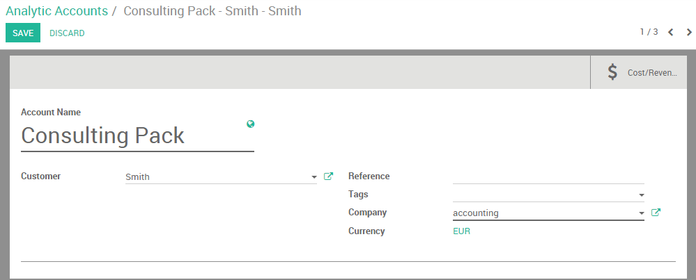
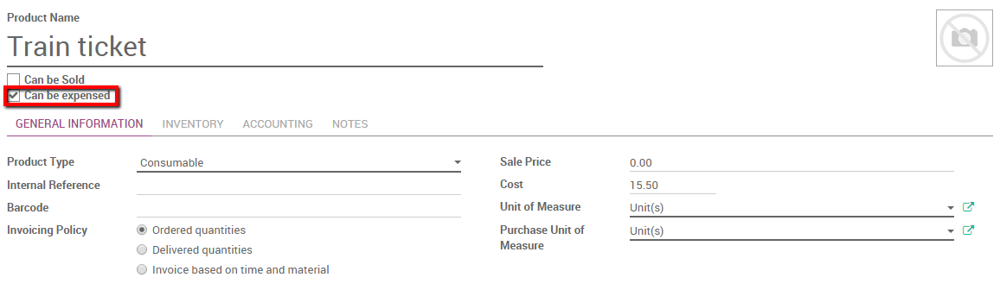
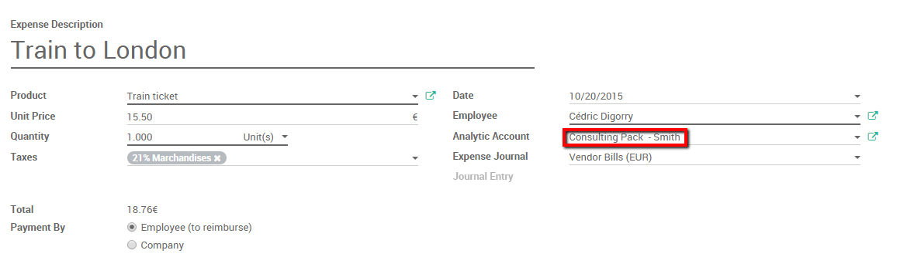
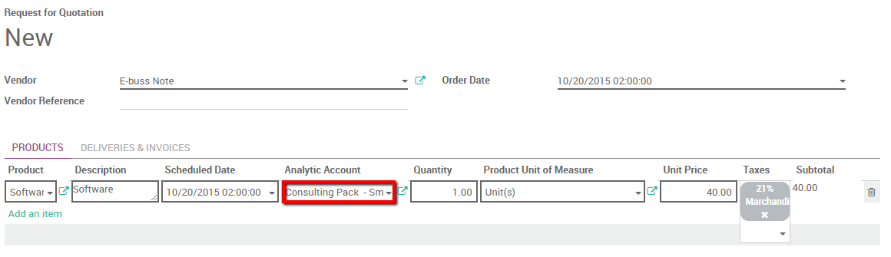
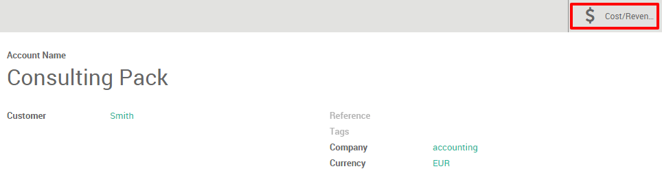

Overview
Thanks to analytical accounting we can track costs of purchases, expenses and subcontracting in the accounting module.
We'll take the following example. We sold a consulting package for a customer. The package is all inclusive meaning no extra cost can be added. We would however like to follow which cost were attached to this transaction as we need to pay for purchases, expenses, and subcontracting costs related to the project.
Configuration
The following modules needs to be installed to track cost. Enter the app module and install the following apps:
 |  | |
|---|---|---|
Please note that the applications provided by these apps only allows us to track the costs. We won't be able to automatically re invoice those costs to our customers. To track and re invoice costs you should install the Sales management app as well.

You can refer to the following docs about reinvoicing costs through analytical accounts: How to manage sub-contracting (purchase of services)?
Enable Analytical accounting
Next step is to activate the analytical accounting. In the accounting app, select and thick the Analytic accounting box.
Moreover, scroll down and thick the Analytic accounting for purchases box.
Don't forget to save our changes.
Create an Analytical account.
First of all you should create an Analytical account on which you can point all your expenses. Enter the accounting app, select . Create a new one. In this case we will call it "consulting pack" for our customer Smith&Co.
We will point all our costs to this account to keep track of them.
Record an expense
We start by booking an expense. Our IT technician had to take a train to go see our customer. He paid for his ticket himself.
Create an expense product
We first need to create an expense product. Enter the Expense module, Click on . Create a new product called Train ticket and set the cost price to 15.50 euros. Make sure the Can be expensed box is ticked.
Book the expense
Enter the Expense module, click on . Select the Train ticket product and link it to the analytical account discussed above.
Submit to manager and wait for the manager to approve and post the journal entries.
Create a Purchase Order linked to the analytical account
Purchase Product
We also need to buy a software for our customers. In the purchase app create a purchase order for the software product. (please refer to the following document: From purchase order to invoice and receptions). Within the line we can link the product's cost with the analytical account. Specify the order line and select the correct analytical account. Confirm the sale.
Accept the delivery and enter the invoice. Once the invoice is entered the cost price (Vendor Price field) will be booked in the analytical account.
Subcontracting
The purchase module can be used in the same way as seen previously to handle subcontracting. if we purchase a service from another company we can re invoice this cost by linking the purchase order line to the correct analytical account. We simply need to create the correct vendors product.
For more information about subcontracting please refer to the following document: How to manage sub-contracting (purchase of services)?
Note
You can also track cost with timesheets, see: How to track costs of human resources with timesheets?
Track costs in accounting
Now that everything is booked and points to the analytical account. Simply open it to check the costs related to that account.
Enter the accounting module, click on .
Select "consulting pack - Smith" and click on the cost and revenue button to have an overview of all cost linked to the account.
Note
If you would like to have the revenue as well you should invoice the Consulting Pack in the Invoice menu and link the invoice line to this same analytical account.